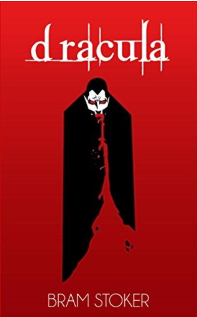

Dracula: a timeless masterpiece

The author:
Bram Stoker (8 nov 1947 - 20 apr 1912) was a famous Irish writer that published different books. He wrote "Dracula" in 1897.
The story:
It involves a vampire and his attempts to move to London and begin feeding on the local population. A coalition of protagonists serve as vampire hunters and attempt to stop and destroy Count Dracula.
The caracters:
- Count Dracula: a super old vampire that wants to conquer the world;
- Jonathan Harker: one of the protagonists, he travels to Count Dracula's castle and somehow survives;
- Abraham Van Helsing: important professor that will be crucial on discovering how to kill Count Dracula;
- Mina Murray: Harker's wife, she's part of the group that's trying to kill Dracula;
- Dr. Seward: Chief of a Psichic ward, part of the anti-Dracula group;
- Quincey Morris: as dr. Seward, one of Lucy's suitors;
- R.M. Renfield: Count Dracula's deranged, fanatically devoted servant. He helps him by distracting the group.